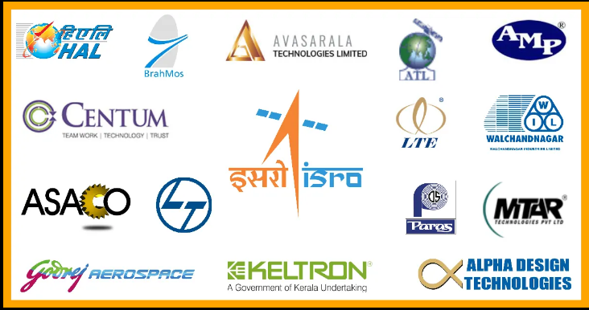
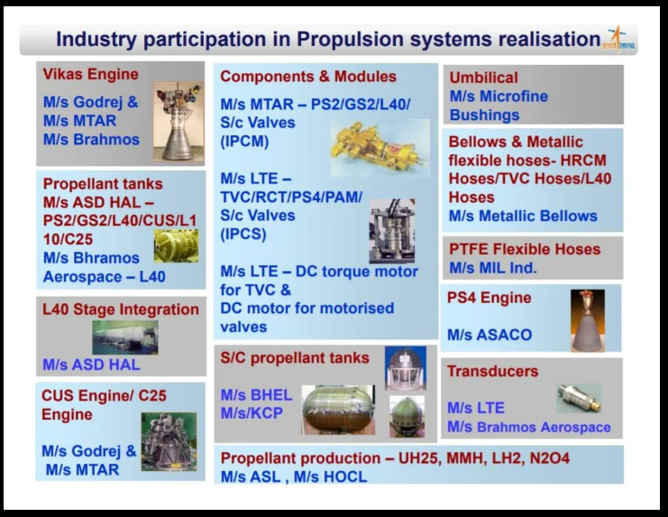
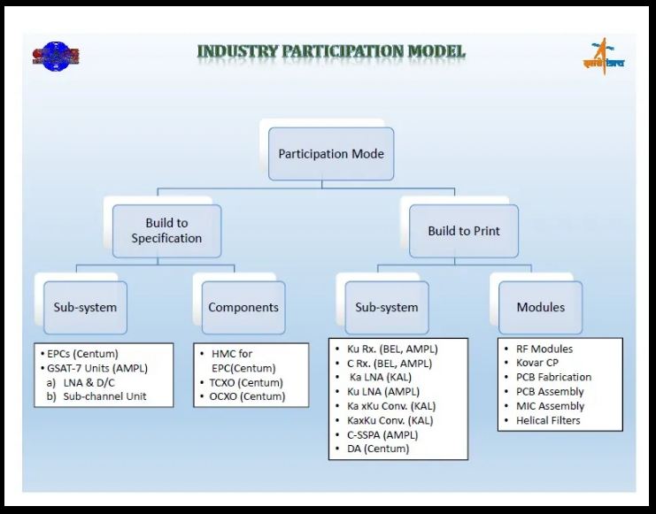

50 ISRO Partners Involved in its Complete Success
In almost 60 years of the Indian Space Program, many industries have been involved in the complete success we have had. Here is a list of our 50 ISRO partners.
The Department of Space of the Government of India has recently been in the news for opening the Indian Space Industry for private players. Their recent webinar, hosted live on YouTube gained a lot of praise and positivity. While the webinar overall provided the DOS and ISRO suggestions to make IN-SPACe better, it was an eye-opener for me. Many of the industries invited to participate were unknown to me. On a further quick search of ISRO's website also didn't provide much insight into the Industry Partners of ISRO. In all these times subreddit r/ISRO comes to the rescue. Based on the inputs, I have compiled this list of ISRO Partners.
As I searched more, the list of Industry partners kept getting longer. Even many scientists have said that there are over 150 ISRO partners spread all over India. Therefore, it was essential to categorise them for ease of handling and understanding all the data. Through my research based on their company websites and various presentations, I have classified them according to their central subsystem area. You'll also get a summary of future plans of companies involved in the 'Unlocking India's Potential in Space Sector' Webinar.
 Credits : S Somanath's 'Access to Space' presentation from 2009 at BSX
Credits : S Somanath's 'Access to Space' presentation from 2009 at BSX
25 Mechanical/Propulsion ISRO Parteners
 Credits : S Somanath's 'Access to Space' presentation from 2009 at BSXGodrej Aerospace
Godrej Aerospace had been involved in the Indian Space Programme since its inception back in 1985. It provides Hi-Tech Aerospace Manufactories Services. Vikas engine, used in the PSLV, was the first engine manufactured by Godrej and they followed onto cryogenic and semi-cryogenic engines. As described on their website, they are involved in 'Precision machining, Precision fabrication, (Welding & Brazing), Heat Treatment, Surface Treatment, Assembly, Testing & Supply of Complex & Airworthy Systems'
In the recent webinar, they discussed their future goals. Complete satellite propulsive system is one of the technologies that they want to take forward. The Vikas engine is manufactured in a pre-assembled mode by Godrej. They now plan to learn and move into the assembly of engines with the help of hand-holding by ISRO.
HAL-Aerospace
Hindustan Aeronautics Limited is a Defence Public Sector Undertaking under the Department of Defence. While, it is India's flagship national aerospace company, proving helicopters and trainers for the defence sector, the association with the space sector began in the early 1970s.
ISRO partnered with HAL for providing light alloy structures. It has since been involved in both satellite as well as launch vehicle structures. From Aryabhata to Chandrayaan 2, they have been contributed to almost all satellite missions. On the launch vehicle front, it participates in the assembly and integration of engines. They plan to expand their facilities for stage integration of PSLV and GSLV. You can find more about their association in the second link references mentioned in the end.
MTAR Technologies Private Limited
Founded in 1970, to indigenously develop and manufacture components and equipment for the space sector, MTAR Technologies Private Limited also is a pioneer in Precision Machining, Testing and Assembly Facilities. It has made its foray into Aerospace, Oil & Energy and Ball Screw sectors.
MTAR has been involved with ISRO since the past 34 years. It is one of the partners of Godrej Aerospace to make engines for PSLV and GSLV. They also plan to expand to stage integration of ISRO launch vehicles.
AVARSARALA Technologies Limited
Avasarala was started in 1986 as a project consultancy company. It has since diversified into the precision assembly of various products for nuclear, space, defence and other R&D sectors. It was in 2001 that the company advanced into space industry with the manufacturing of heat pipes for satellites such as GSAT, INSAT and CARTOSAT series, AstroSat, Chandrayaan, RISAT and many more. It also provided complete thermal systems which have been used onboard satellites such as INSAT-3D and CARTOSAT-2B satellites.
Apart from thermal management systems, Avasarala provides high precision manufacturing and Ion Beam polishing service. The company also offers heaving machinery like thermovac chamber, conformal coating system, CNC performing machine, spill collection systems. They also re-furbished the W2M transport container of ISRO.
BrahMos Aerospace
Another company which partners with ISRO on the Precision Machining, BrahMos Aerospace was established in India after an inter-governmental agreement with The Russian Federation. They partner with other ISRO partners in the development of Vikas Engine and also manufacture propellant tanks.
Larsen & Tourbo Limited
Larsen & Toubro is an Indian multinational engaged in technology, engineering, construction, manufacturing and financial services. L&T has partnered with ISRO for close to 50 years in the area of Launch Vehicles. Even the Deep Space Network Antenna at ISTRAC was installed and commissioned by L&T. Like all other industries involved in Launch Vehicle technology, they also plan to expand into PSLV integration and operations.
Walchand Industries Limited
Walchandnagar Industries Limited (WIL), is a Heavy Engineering Company with a presence in Strategic Sectors like Defence, Nuclear & Aerospace. ISRO and WIL started their association with the manufacturing of motor cases for SLV-3 in 1973. Since then WIL has participated in all launch vehicle programs in providing motor casing. As per their website, they have provided 141 strap-on boosters for PSLV/GSLV Mk II, 134 core boosters for PSLV/GSLV Mk II and 16 core boosters for GSLV Mk III till now.
ASACO
ASACO was founded in 1969 with a vision to revolutionise the Indian Metal Forming and Cable Industries by introducing the World's best European Equipment in India. The PSLV Stage Four Engine - PS4, a liquid propulsion engine is manufactured by this company alone. No other ISRO partner manufactures this engine. The engine is also used in the first stage for roll.
Paras Defence and Soace Technologies Limited
PDSTL is a Mumbai based company which manufactures optics for space and defence sectors. As per their website, they have been involved in Chandrayaan 2, Mars Orbiter Mission, ResourceSAT 3S and Aditya-L1 missions. They also provided gratings for the HySIS and GSAT 29 satellites.
Other ISRO Partners in Space industry working in Mechanical Sector
- Linde Group: Integrated Fluid Service System for C-25 Thrust Cryogenic Engine Test facility and Fluid System of Cold Test Facility at LPSC-ISRO, Mahendragiri, India
- MECON Limited: Execution of Second Launch Pad at Sriharikota
- CCTC Bhubaneswar: High Precision Manufacturing
- Microtech Precision, Hyderabad: High Precision Manufacturing
- Amado Tools, Bangalore: High Precision Manufacturing
- Craftsman Automation, Coimbatore: High Precision Manufacturing
- Microfine Bushings: Umbilical Cords
- Metallic Bellows Private Limited: Bellows and Metallic Flexible Hoses
- MIL Industries Limited: PTFE Flexible Hoses
- KCP Limited: Mobile Launch Platform at Sriharikota
- Kerala Automobiles Limited: High Precision Manufacturing
- Microtech Engineering, Bangalore: High Precision Manufacturing
- K max industries, Chennai: High Precision Manufacturing
- Jojo Industries, Ettumanoor: High Precision Manufacturing
- AIS, Nazareth: High Precision Manufacturing
- Mech VACC, Mumbai: High Precision Manufacturing
15 Electronics/Communications ISRO Partners
 Credits : S Somanath's 'Access to Space' presentation from 2009 at BSXKeltron
Keltron is a government of Kerala undertaking, producing a wide range of products from discrete electronics components to complex equipment and systems. Right from the beginning of launch vehicle technology in India from SLV program to GSLV Mk III, Keltron provides avionics packages for these launch vehicles. About 40 to 50 Keltron packages fly onboard each PSLV and GSLV.
They plan to expand to sub-assemblies and subsystem fabrication. A reflow soldering facility and clean room for sub-assembly fabrication have recently commissioned at the Keltron Equipment Complex. VSSC has also identified the company as a nodal centre for training and certification in high-reliability soldering and inspection of satellite/launch vehicle electrical packages.
Ananth Technologies Limited(ATL)
Ananth Technologies Limited, incorporated in 1992, offers the manufacturing of critical aerospace systems and high-value geospatial services. According to their website, they have been 'integral in about 50 launch vehicles and close to 100 space crafts'. Also, their Geospatial services are widely used for town planning and infrastructure building.
Ananth has been one of the ISRO Partners since 1998. They are involved in launch vehicle and onboard satellite systems along with the ground checkout systems. Their range of products is quite wide from telemetry systems, OBCs, RF boards, control sensors and actuators, antenna and optical systems. They are also involved in the launch vehicle integration activities at Sriharikota. A detailed list of their products and services can be found on the second link in references mentioned in the end.
Electronics Corporation of India Limited(ECIL)
ECIL was set up under the Department of Atomic Energy in 1967 intending to generate a strong indigenous capability in the field of professional grade electronics. ECIL works on three major technology lines viz. Computers, Control Systems and Communications.
Company's association with the Indian Space Programme dates back to 1968 when they developed and commissioned India's 1st INTELSAT Class-A Earth Station Antenna at ARVI, Pune. Since then, ECIL is involved in developing various satellite ground station antennas.
Centum
Centum was founded in 1994 in Bangalore, India. There are four central business units: Centum Adeneo Engineering, Centum Strategic Electronics, Centum Adetel Transportation Solution and Centum Electronics Manufacturing Services.
They have been associated with ISRO since 2002. They provide satellite bus systems, test tools, power management system and data recorders for satellites. Recently a complete payload was built by Centum. A detailed list of their products and services can be found on the second link in references mentioned in the end.
Astra Microwave Products Limited (AMPL)
Astra Microwave Products Limited (AMPL), incorporated in 1991, work in the fields of RF, Microwave, and Digital electronics. Their space group started back in 2004. AMPL also has a wide range of products for both flight and ground-based applications. They also provide INSAT MSS (mobile satellite system) Terminals. Their specialisation is in RF systems. A detailed list of their products and services can be found on the second link in references mentioned in the end.
Alpha Design Technologies Private Limited
Established in Bangalore during 2004, ADTL specialises in R&D, manufacture, assembly, testing, qualification, integration & installation of Defence Electronics, Avionics & Space Satellites systems. They provide ground, navigation and satellite equipment such as Navic and GPS receiver and Antenna Control Systems. Satellite services ranging design, development, assembly, integration, testing, site planning and maintenance is also provided by alpha.
ADTL has been recently involved in the assembly, integration and testing of two launched satellites 1.5-ton IRNSS-1I and 3.5-ton GSAT-30 as a consortium. Currently, they are working on the RISAT-2BR2 to be launched in November 2020. In future, the small satellite market is their target. A detailed list of their products and services can be found on the second link in references mentioned in the end.
Data Patterns
Data Patterns is one of India's leader in indigenously developed electronic systems in the Defence and Aerospace domain. It started ISRO partnership around 20 years back by making checkout systems for ISRO such as the Second Launch Pad Count Down Checkout System.
In the past five years, they have expanded into small satellite domain. Data Patterns has designed and developed standard off-the-shelf products for Nanosatellite bus suitable for Low Earth Orbit (LEO) satellite missions. Most of the subsystems are proven in space, flown on NIUSAT, INS-1A, INS-1B & INS-1C satellites.
Currently, they are developing two complete satellites for the private industry, one to be launched by Russia and one probably with ISRO. They plan to expand more to provide full small satellite service right from development to ground station capabilities.
VCB Electronics
The Pune-based company started in 2001 to provide a dedicated facility for fabrication, testing and evaluation of avionics packages. VCB Electronics has been associated with all centres of ISRO right from inception.
They are involved in providing thick-film hybrid micro-circuits and wiring, assembly, integration and testing (WAIT) of modules for launch vehicle applications. To test all systems in-house, VCB has established Full-fledged Environmental Testing Facilities including thermo-vac, shock and vibration.
Lakshmi technology and Engineering Industries (LTE)
LTE was incorporated in the year 1968 and ventured into Aerospace industry in the year 2004. This company provides components such as control valves, DC motors, transducers for launch vehicle as well as spacecraft systems.
Other ISRO Partners in Space Industry working in Electronics and Communications Sector
- ITI Limited: VSSC Flight Package Assembly Plant at Pallakad
- Bharat Heavy Electronics Limited (BHEL): space-grade solar panels and batteries, technology transfer of space-grade Li-Ion Batteries
- Bharat Electronics Limited (BEL): NavIC Messaging Receiver Technology Transfer, S-band Polarimeter Doppler Weather Radar (DWR)
- Electronics Regional Test Laboratory (ERTL): Electronical, Environmental and Component Testing
- Andhra Electronics: Indigenous Crystal filters
- Tata Consultancy Services (TCS)
10 Materials/Chemical ISRO Partners
Heavy Engineering Corporation Limited
Heavy Engineering Corporation Limited is one of the leading suppliers of capital equipment in India for steel, mining, railways, power, defence, space research, nuclear and strategic sectors. According to their website, they have provided Folding cum Vertically Repositionable Platforms (FCVRP) for space vehicle integration, Horizontal Sliding Door (HSD), Mobile Launch Pedestal (MLP), Development of Special grade of steel for ISRO and more.
TATA Advanced Materials Limited (TAML)
TAML is composite manufacturing and solutions company which caters to the aerospace, space, defence and industrial sectors. It has had a fifteen-year long journey with VSSC, ISRO. Their website states that they provide Solar Panel Substrates (SPS), Yokes, Interstage Assemblies (PLA, PS3A & IS3/4 components) and Deck Plates. It is one of the leading providers of materials to ISRO.
ANABOND Limited
Anabond Limited is one of the leading manufacturers of Engineering Adhesives & Sealants, Paints, Speciality Coatings & other chemical formulations in India since 1979. They started providing adhesives for aerospace applications in 1992.
Other ISRO Partners in Space Industry working in Chemicals and Materials Sector
- Advanced Systems Laboratory (ASL): Propellant Production
- Hindustan Organic Chemicals Limited: Propellant Production
- Bharat Aluminium Company Limited (BALCO): Manufacturing AA2014, AA2219, AA7075 and AA6063 alloys for VSSC
- Mishra Dhatu Nigam Limited (MIDHANI): Materials for Vikas Engine and Motor Casing
- Berger Paints: Fire Retardant Paint Technology Transfer
- Performance Polymers: PC 10 TPS Technology Transfer
- Surmit Enterprises, Procyon Technology, Pardhan Engineering: Black Anodizing on Aluminum 6061-T6 and Chromating Technology Transfer